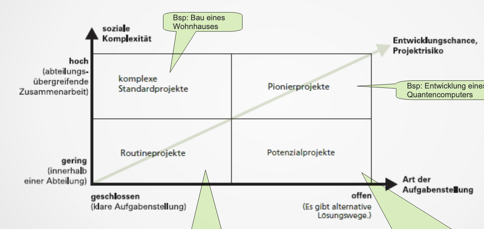

Projekte
Eigenschaften
- inhaltliche Zielsetzung
- zeitliche Zielsetzung
- relative Neuartigkeit
- beschränkte Ressourcen
- Komplexität
- höheres Risiko
- wirken motivierend
- interdisziplinär / heterogen
Projektphasen
Da ein Projekt in vielerlei hinsicht komplex ist siehe Eigenschaften wird es in verschiedene Phasen eingeteilt diesen Prozess nennt man Divide & Conquer. Dies bietet einiges an Vorteilen unter anderem das mann genau versteht wer was zu tun hat und bis wann (optimaler weise) und da ein Riesenprojekt ohne jeglichen Anhaltspunkt demotivierend wirken kann wird auch diese Demotivation verhindert.
Projektinitiierung
Hier wird geprüft ob man das Projekt durchführen darf man reicht einen Projekt Antrag ein sollte dieser genehmigt werden bekommt man noch ein wenig zeit um folgende Schritte durchzuführen.
Sind diese Schritte durchgeführt und man hat einen Projektentscheid ist die Projektiniierung vorbei und man geht in die Projektplanung über.
Projektplanung
Hier beginnt ein Projekt erst wirklich da man nun den Projektentscheid hat was quasi eine art Point of no return darstellt. Man definiert und führt folgende dinge durch.
- Meilensteine
- Ziele welche inhaltlich und zeitlich überprüft werden können.
- Teambildung
- Arbeitspakete
- Stakeholder & Risiko Analysen
Wenn man dann ein Team, Ziele/Meilensteine und eine zeitliche und persönliche Einteilung hat geht man in die Projektdurchführung über.
Projektdurchführung
Nach Abschluss eines jeden Meilensteins wird ein Bericht erstellt, anhand dieses Berichtes kann der Projekt Manager sich entscheiden ob er weitermachen will wie zu vor oder vielleicht seine Strategie anpassen will. Dies könnte man unter anderem am Zeitpunkt der Fertigstellung des Meilensteins erkennen.
Projektevaluierung
Das Projekt wird noch mal in Retrospektive betrachtet, man schaut sich an was hätte ich besser machen können was kann ich fürs nächste Projekt von diesem Projekt mitnehmen usw.
Projektklassifikationen
Warum klassifiziert man Projekte?
Hilft einem zu bestimmen welche PM Systeme und Methoden man verwendet. Man kann auf bestimmte Teilbereiche besonders achten und auf andere weniger wenn man zb ein Projekt schon abgeschlossen hat kann man hier ein wenig die Planung vernachlässigen.
Wie kann man Projekte unterscheiden
- Auftraggeber
- intern
- extern
- Ziele
- Sachziel orientiert
- Prozess orientiert
- Häufigkeit
- repetetiv
- nicht repetetiv
Eine andere Art Projekte zu klassifizieren ist mit der sogenannten 4 Felder Matrix.

Multiprojektmanagement
Multiprojektmanagement befasst sich mit der Planung aller in einem Unternehmen laufenden nicht geheimen Projekte und Programmen. All diese Projekte und Programme zusammen nennt man Projekt Portfolio. Hier werden Synergie, nutzung von Ressourcen und Beitrag zur Unternehmensstrategie beachtet.
Programme
Projekte die gemeinsam ein selbes Ziel verfolgen.
Wie werden Projekte ausgewählt?
- Projekte werden von Projektmanagern in ein Projekte-Pool geworfen mit den jeweiligen Eckdaten (Machbarkeit, Kosten, Dauer … Projektinitialisierungsdaten)
- Portfoliomanager bewerten die Projekte in dem Projekte-Pool und entscheiden welche Projekte angegangen werden, in eine Warteschlange verschoben werden oder abgelehnt werden.
- Projekte werden in Programme zusammengefasst oder einzeln ins Projekteportfolio eingefügt.
Lenkungsausschuss
Setzt sich aus Mitarbeitern des oberen Management / der Unternehmensleitung zusammen. Kann auf Portfolio oder Projekt Ebene eingesetzt werden.
PMO (Project Management Office)
Zuständig für:
- Standards, Richtlinien und Prozesse
- Erstellen von Templates, Checklisten
- Bereitstellung von Infrastruktur
Projektmanager
Der Projektmanager ist eine zentrale Person im Projekt, er ist verantwortlich für die Zielsetzung, Planung, Strukturierung und das organisieren eines Projektes, des Weiteren das effiziente abwickeln eines Projekts. Er sollte über viele verschiedene Kenntnisse verfügen darunter
- Fachwissen zum Projekt selbst
- Methodenwissen Projektphasen, Struktur usw
- Soziale und Personale Kompetenz Empathie, Kommunikation usw.
- Führungskompetenz
Zertifizierungen
Ein Projekt/Programm/Portfolio Manager kann sich auch Zertifizieren lassen. Bei einem Zertifikat bestätigt ein unabhängiges Institut deine Fähigkeiten und Kompetenzen.
Für den zertifizierten hat das den Vorteil das er einen konkreten Beweis für seine Fertigkeiten hat was ihm z.B einen Vorteil am Arbeitsmarkt verschaffen könnte. Für das Unternehmen und die Kunden des Unternehmens ist es eine Absicherung das die Person auch wirklich auskennt.
Institutionen
Es gibt verschiedene Institutionen mit verschiedenen Zertifikaten. Es gibt Zertifikate für Projekt Manager, Programm Manager, Portfolio Managers and even PMO.
- IPMA (International Project Management Association | Schweiz) -> ICB (Individual Competence Baseline)
- Zertifikate
- IPMA Level D – Certified Project Management Associate
- IPMA Level C – Certified Project Manager
- IPMA Level B – Certified Senior Project Manager
- IPMA Level A – Certified Projects Director
- Zertifikate
- PMI (Project Management Institute | USA) -> PMBoK (Project Management Book of Knowledge)
- Zertifikate
- Certified Associate in Project Management - CAPM
- Project Management Professional - PMP
- Program Management Professional - PgMP
- Portfolio Management Professional - PfMP
- Zertifikate
- Axelos (Vereinigtes Königreich) -> PRINCE2 (Projects in controlled environments)
- Zertifikate
- PRINCE2 Foundation
- PRINCE2 Practitioner
- PRINCE2 Professional: seit 2017 nicht mehr verfügbar
- Zertifikate